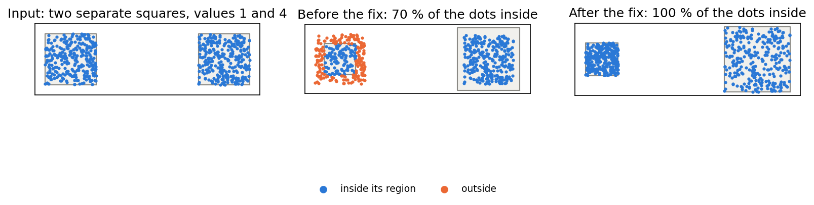

The pre-scaling scaled every connected component of the geometries to its target area but left the landmarks and the displacement coordinates where they were, so they started outside a region that was scaled down. With two separate squares (values 1 and 4, 300 dots each) 39 % of the dots of the shrunken square were inside it at the end; they are all inside after the fix. Contiguous inputs such as the US states (one component, factor 1) are unchanged. VoronoiOptions.prescale_components now also pre-scales a premorph that does not set it itself (MorphOptions.prescale_components is None by default, which behaves as False): on the 52 US regions the premorph converges in 58 instead of 168 iterations.
make_figures.py runs the case in a checkout of main (before) and of the fix (after) and writes the figure and data/tables.md.
| share of the dots inside their region (square 1, square 2) | final areas | |
|---|---|---|
| Before the fix | 0.39, 1.0 | 0.4, 1.6 |
| After the fix | 1.0, 1.0 | 0.4, 1.6 |
voronoi_premorph.py writes data/voronoi.md. The cascade shortens the premorph; the total time is the same within noise (the Voronoi run dominates), and the cell area errors are those of the pre-scaled Voronoi run (without any pre-scaling the cells are off by 6.3 % on average and 35 % at most).
| case | premorph iterations | premorph mean / max error % | Voronoi cell area error mean / max % | seconds |
|---|---|---|---|---|
| premorph=True, VoronoiOptions.prescale_components=True (cascades) | 58 | 1.3 / 8.4 | 0.0 / 0.1 | 2.2 |
| premorph=MorphOptions(prescale_components=False), Voronoi flag on (the behavior before) | 168 | 1.2 / 9.8 | 0.0 / 0.0 | 2.1 |
| premorph=True, no pre-scaling | 168 | 1.2 / 9.8 | 6.33 / 35.4 | 2.1 |

Left: the input. Middle: before the fix the dots of the first square, which the pre-scaling shrinks to 0.4 of its area, are mostly outside it (orange). Right: after the fix the dots are scaled with their square and all are inside.